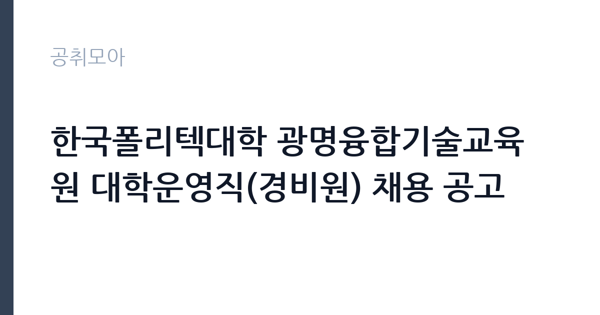

[공공기관] 한국폴리텍대학 광명융합기술교육원 대학운영직(경비원) 채용 공고
학교법인한국폴리텍 · 경기 · 마감 2026-10-06 (D-8) · 출처 잡알리오

한눈에 보는 모집 조건
| 기관 | 학교법인한국폴리텍 |
|---|---|
| 공고명 | 한국폴리텍대학 광명융합기술교육원 대학운영직(경비원) 채용 공고 |
| 고용형태 | 정규직 |
| 근무지 | 경기 |
| 게시일 | 2026-09-29 |
| 마감일 | 2026-10-06 (D-8) |
지원자격, 이렇게 읽으세요
- 공공기관 채용공시
- 세부 조건은 원문 공고문 확인
자격요건은 해당 직무 수행이 가능한 자로, 주야간 교대근무가 가능하고 감시적·단속적 근로자 적용에 동의해야 합니다. 연령은 면접 예정일 기준 18세 이상 60세 미만이며 정년은 만 60세입니다. 학력과 성별 제한은 없으나 남성은 병역필 또는 면제자여야 합니다. 학교법인 인사규정 결격사유에 해당하지 않아야 하며, 업무직운영규칙에 따른 채용 자격기준 해당자여야 합니다. 각 캠퍼스 중복지원이 불가하고 지정 서식을 쓰지 않으면 접수가 안 되므로 서식을 먼저 내려받으십시오.
이 공고의 포인트
이 공고의 가장 큰 장점은 정규직이라는 점입니다. 대학운영직은 한국폴리텍대학의 정식 직원으로 4대보험과 퇴직금이 보장됩니다. 학력 제한이 없어 고졸과 중장년층도 지원할 수 있고, 광명융합기술교육원은 수도권 근무라는 이점이 있습니다. 경비 직무는 주야간 교대라 체력 부담이 있지만, 캠퍼스 내 근무라 근무 환경이 안정적입니다. 정년이 만 60세로 명시돼 장기 근무 설계가 가능합니다.
전형은 어떻게 진행되나
전형은 서류와 면접 중심으로 진행되며 사전인터뷰 성격의 접수 절차가 포함될 수 있습니다. 동일 직종 타 캠퍼스 사례에서는 고용24와 이메일 접수를 병행했습니다. 캠퍼스별 중복지원이 금지되므로 광명융합기술교육원에 집중해서 지원해야 합니다. 기재 착오로 인한 불이익은 본인 책임이므로 지정 서식 작성법을 꼼꼼히 확인하십시오. 임용 예정일이 11월 중이라 10월 안에 전형이 마무리될 것으로 보입니다.
원문에서 확인한 전형 방식
ㅇ (자격) 해당 직무를 수행할 수 있는 자 - 주,야간 교대 근무가 가능한 자(감시적,단속적 근로자 적용에 동의하는 자) ㅇ (연령) 면접심사(예정)일 기준 18세 이상 60세 미만인 자 (정년 만60세) ㅇ (학력,성별) 제한 없음 ㅇ (근무) 채용 즉시 근무 가능한 자 (임용 예정일 : `26년 11월 중) ㅇ (병역) 남자의 경우 병역필(임용예정일까지 전역 가능한 자 포함) 또는 면제자 ㅇ 학교법인 인사규정 제19조에 해당하지 않는 자 ㅇ 업무직운영규칙 제8조3항에 따른 채용 자격기준 해당자
이런 분께 추천해요
- 학력 제한 없는 정규직을 찾는 분께 맞습니다. 만 18세 이상이면 학력과 무관하게 지원할 수 있습니다.
- 수도권에서 안정적인 교대근무 일자리를 원하는 분께 권합니다. 광명 근무로 출퇴근이 가능한 분이 좋습니다.
- 경비나 시설관리 경험이 있는 중장년층에게 유리합니다. 정년 만 60세까지 근무할 수 있는 자리입니다.
지원 전 체크리스트
- 지정 고유서식(응시원서·개인정보 동의서)을 내려받았습니다. 다른 양식으로 제출하면 접수되지 않습니다.
- 주야간 교대근무 가능 여부와 감시적·단속적 근로자 적용 동의 조건을 확인했습니다. 체력적으로 감당 가능한지 판단하십시오.
- 병역 요건(남성 병역필·면제)과 결격사유를 확인했습니다. 임용 예정일까지 전역 가능한 자도 포함됩니다.
- 다른 폴리텍 캠퍼스 공고와 중복지원하지 않았는지 확인했습니다. 중복지원 시 불이익을 받을 수 있습니다.
모집 일정과 제출 타이밍
접수 마감은 10월 6일입니다. 지금부터 약 1주일이 남았으므로 지정 서식을 내려받아 이번 주말 안에 작성하십시오. 서류 접수 후 면접이 10월 중에 치러지고 11월 중 임용 예정입니다. 경비 직무는 즉시 근무 가능자가 유리하므로 현재 재직 중이라면 퇴사 일정과 임용 예정일을 맞춰보십시오. 접수 마감일이 임박하면 문의가 몰리므로 채용 담당 문의는 평일 오전에 하시는 것이 좋습니다.
직무 이해하기: 공공기관
대학운영직 경비원은 캠퍼스 출입 통제와 순찰, 시설 보안 점검, 야간 당직과 비상 상황 초동 대응을 맡습니다. 광명융합기술교육원은 직업훈련 시설이라 낮에는 학생과 방문객 출입 관리가, 야간에는 무인 시설 순찰이 중심 업무입니다. 주 4일 근무 형태의 교대 편성이 일반적이며(타 캠퍼스 사례 기준) 화재와 침입 같은 비상 상황 발생 시 관계기관 연락과 초기 조치를 수행합니다. 친절한 응대와 기록 유지도 중요한 직무 요소입니다.
자기소개서 작성 팁
지원서에서는 교대근무 가능 의지와 체력 자신감을 구체적으로 쓰십시오. 야간 근무나 보안 업무 경험이 있다면 기간과 담당 구역을 명시하십시오. 교육기관 보안의 특수성(이용자가 학생이라는 점)을 이해하고 있다는 점을 보여주면 좋습니다. 광명 지역 근무 가능 사유와 즉시 근무 가능 여부도 분명히 쓰십시오. 과장된 포부보다 성실한 근무 의지를 전달하는 것이 경비 직무 자소서의 핵심입니다.
면접 준비 포인트
면접에서는 야간 근무 적응력과 비상 상황 대처 능력을 물을 가능성이 큽니다. 순찰 중 화재나 침입자를 발견했을 때의 대응 절차를 순서대로 말할 수 있어야 합니다. 민원인 응대 경험과 친절 사례도 준비하십시오. 장기 근무 의지를 묻는다면 정년까지의 계획을 구체적으로 답변하십시오. 감시적·단속적 근로 조건에 대한 이해와 동의 의사를 분명히 밝히는 것이 중요합니다.
급여·근무조건 읽는 법
정확한 보수는 원문 공고문에서 확인하셔야 합니다. 참고로 같은 대학운영직 경비원 채용 사례(한국폴리텍대학 바이오캠퍼스 공고)에서는 연봉 3,357만 원이 제시된 바 있습니다(출처: 채용공고 게시 정보). 캠퍼스와 경력에 따라 금액이 다를 수 있으므로 광명융합기술교육원 공고문의 수치가 최종 기준입니다. 정규직이므로 4대보험과 퇴직금이 적용되며, 교대근무에 따른 야간·휴일근로 수당은 근로기준과 단체협약에 따라 지급됩니다. 기본급과 수당 내역은 공고문 또는 임용 후 근로계약서에서 확인하십시오.
자주 묻는 질문
- 학력 제한이 정말 없나요?
학력과 성별 제한이 없습니다. 만 18세 이상 60세 미만으로 해당 직무 수행이 가능하고 주야간 교대가 가능하면 지원할 수 있습니다. 다만 남성은 병역필 또는 면제자여야 합니다. - 다른 캠퍼스에도 지원할 수 있나요?
한국폴리텍대학 각 캠퍼스별 중복지원이 불가합니다. 광명융합기술교육원 한 곳에만 지원해야 하므로 신중히 선택하십시오. - 교대근무는 어떻게 하나요?
주야간 교대근무가 원칙이며 감시적·단속적 근로자 적용에 동의해야 합니다. 타 캠퍼스 사례에서는 주간과 야간 교대 편성으로 운영됐습니다. 정확한 근무표는 임용 후 안내받게 됩니다.
함께 보면 좋은 공고
[공공기관] 한전KPS(주)강원충북전력지사 단기노무원(강릉지점 차량순시) 채용공고(31차) — 마감 2026-10-01[공공기관] (재)강원역사문화연구원 2026년 정규직 채용 공고 — 마감 2026-10-09[공공기관] 기장군도시관리공단 2026년도 체험형 청년인턴 채용 공고 — 마감 2026-10-08출처: 잡알리오 공개정보를 바탕으로 공취모아가 정리한 안내글입니다. 모집 조건·일정은 변경될 수 있으니 지원 전 반드시 원문 공고문을 확인하세요. 본 글은 정보 제공용이며 합격을 보장하지 않습니다.